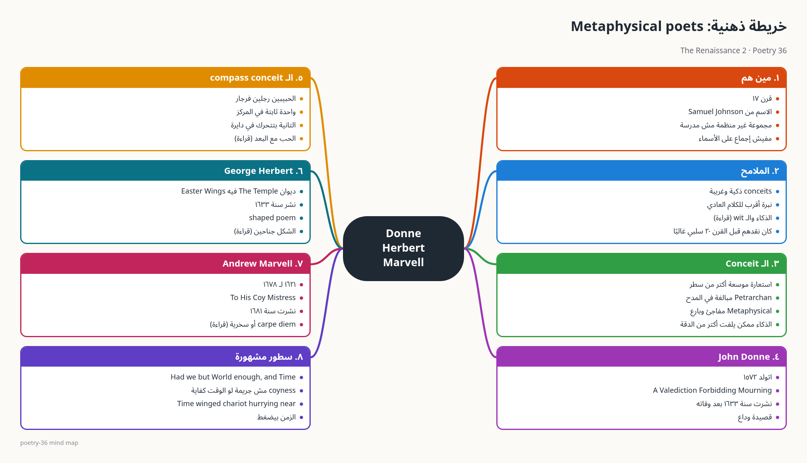

🧭
الدرس 36: The Renaissance 2: the Metaphysical poets، يعني الشعراء الميتافيزيقيين (Donne وHerbert وMarvell)
📄 حمّل PDF الدرس 🎧 حمّل تسجيل الدرس كامل (MP3 · 3 MB) 📝 ملخص الدرس (عربي) PDF 📝 Lesson Summary (English) PDF 🧠 الخريطة الذهنية PDF🧠 شوف الخريطة الذهنية للدرس
